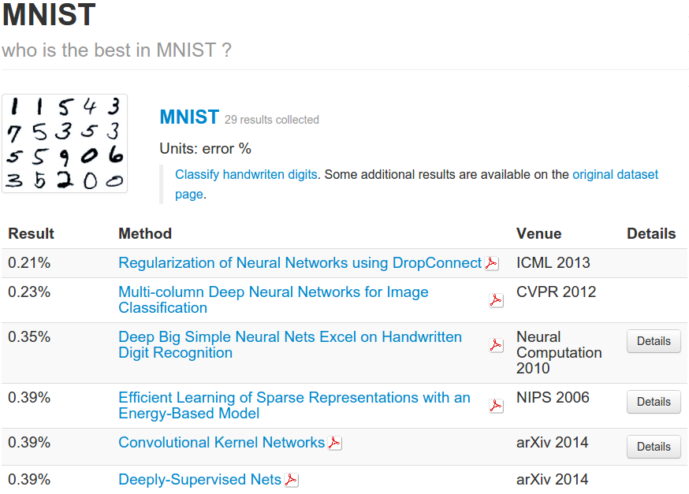
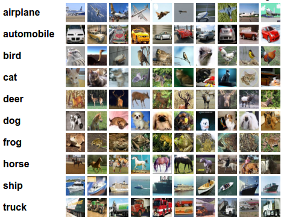
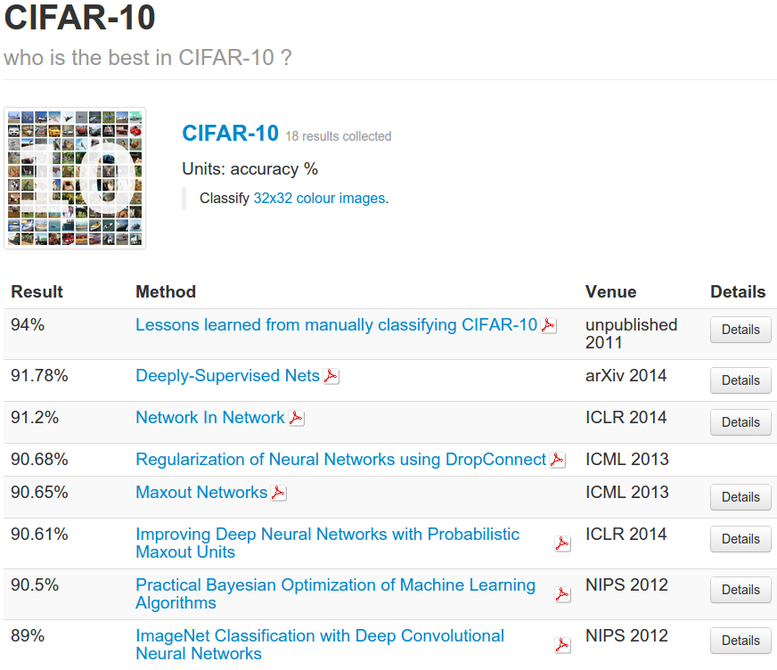

Machine Learning Tutorial (VIII) Tiny Images Classification Competition
(Ray) Shirui Lu
srlu_AT_cs.hku.hk
Table of Contents
Introduction
Where are we so far?
- Working on different methods to classify hand written digits:
- What we have tried:
- LR(ML,MAP), kNN. (A1)
- MLP. (A2)
- MoG, PCA. (A3)
The State-of-the-art

[Rodrigo Benenson]
A real world challenge
- CIFAR-10 Tiny Images Dataset
- 60,000 32*32 RGB color images.
- 10 object classes, 6,000 each.
A real world challenge (cont'd)
- CIFAR-10 is tougher.
- multi-class
 and
and
 and
and 
- …
A real world challenge (cont'd)

[Rodrigo Benenson]
Your Task
Dataset
octave:1> load a4data
octave:2> whos
Variables in the current scope:
Attr Name Size Bytes Class
==== ==== ==== ===== =====
data_nolabel 31800x3072 97689600 uint8
data_test 1200x3072 3686400 uint8
data_train 3000x3072 9216000 uint8
labels_train 3000x1 3000 uint8
- Reduce sized CIFAR-10.
- 6 categories: 0-airplane, 1-automobile, 2-bird, 3-cat, 4-deer, 5-dog.
- Training: 3000 labeled images (500 each), 31800 unlabeled images.
- Test: 1200 images.
Rules
- Goal: Maximize accuracy on test set.
- Restrictions
- Any (supervised, unsupervised) model.
- Any programming language. (Instruct us how to run!)
- Any publicly available code. (Make sure you tell us!)
- Work solo, or as a team of 2.
Submission
- A Report (please see a4.pdf for detailed requirements)
- Code and Data: Specially, include a script like run_prediction.m.
- Input: an arbitrary size of input test data.
- Process: Load you trained model, and run on input test set.
- Output: it's corresponding predictions.
- Shouldn't take more than 10 mins to run.
Kaggle (Demo: kNN Baseline)
- Our Competition Home on Kaggle (not open yet)
- [Important] Sign up with you @hku.hk email, or you won't get entry to it.
- Upload your solution (label of the 1,200 test data) as csv format now and then to see how well your model performs.
id,label 1,0 2,0 ... 1200,0
Kaggle (cont'd)
- Kaggle evaluates your solution.csv by comparing it line to line with solutions.csv (ground truth labels of test data) we provided.
- Performance Measure
- You resulting accuracy and ranking on leaderboard is shown real-time.
- But based on 25% of the whole test data, performance on the other 75% is hidden from you.
- Advice
- Don't optimize for leaderboard performace, which is likely to overfit the 25% test data. :O
- At least beat kNN baseline! :D
Marking Criteria
- Resulting Accuracy. (based on Kaggle)
- Creativity of your idea.
- Clarity of your report.
- What makes your result good, and why? and/or,
- What makes your result unsatisfying, why, and how to improve?